Code
graph LR
A[Initialize parameters] --> B(E-step)
B --> C(M-step)
C --> Bgraph LR
A[Initialize parameters] --> B(E-step)
B --> C(M-step)
C --> B
Decoding Speech: A Probabilistic Framework for Spoken Digit Recognition
This project presents a probabilistic approach to recognizing spoken digits using Gaussian Mixture Models (GMM) and Mel-Frequency Cepstral Coefficients (MFCCs). By combining the power of statistical modeling with feature extraction techniques inspired by human auditory perception, the system achieves high accuracy in classifying spoken digits.
The framework employs MFCCs to extract compact and meaningful features from audio signals and uses GMMs to model the probability distribution of these features. The results demonstrate that this lightweight system is ideal for resource-constrained environments, offering a practical solution for speech recognition tasks.
| Category | Details |
|---|---|
| Problem | • Resource-intensive speech recognition systems requiring substantial computational power • Need for efficient spoken digit classification • Complex deep learning models unsuitable for embedded devices • Challenge of maintaining accuracy with simpler models |
| Solution | • Probabilistic framework using Gaussian Mixture Models (GMM) • MFCC feature extraction for audio processing • Dual initialization approaches (KMeans and EM) • Gender-specific model segmentation • Multiple covariance types implementation |
| Technologies | • sklearn.mixture.GaussianMixture: Core GMM implementation• sklearn.cluster.KMeans: Model initialization• sklearn.preprocessing.StandardScaler: Data normalization• sklearn.pipeline.make_pipeline: Model workflow• sklearn.metrics: Evaluation metrics• numpy: Numerical computations• matplotlib.pyplot, seaborn: Visualization• pandas: Data manipulation• tqdm: Progress tracking• rich.console: Enhanced output• logging: System monitoring |
| Results | • 90.5% accuracy with EM/Diagonal covariance • Higher accuracy for female speakers (93%) vs male (87.6%) • Full covariance type achieved 89.2% with KMeans • Improved performance with gender segmentation • Efficient computational resource usage • Robust performance across different digits |
| Key Learnings | • Feature engineering crucial for model performance • Model interpretability provides valuable insights • Simple probabilistic models can match complex ones • Data segmentation can enhance accuracy • Initialization method selection impacts performance • Covariance type selection affects model accuracy • Balance between complexity and efficiency vital |
Speech recognition has changed the way we interact with technology. From asking Siri about the weather to commanding Alexa to turn off the lights, it’s everywhere! But what about something simpler—like recognizing spoken digits? Imagine saying “one, two, three” and having a system accurately understand and process those numbers. Sounds simple, right? Not quite.
This project dives into the fascinating world of spoken digit recognition, where we focus on identifying isolated numbers spoken aloud. To tackle this challenge, we use two powerful tools: Gaussian Mixture Models (GMM) and Mel-Frequency Cepstral Coefficients (MFCCs). Together, they form a lightweight and efficient framework for extracting meaningful patterns from speech and classifying them accurately.
Speech recognition has come a long way. Back in the day, systems relied on methods like Hidden Markov Models (HMM) and Dynamic Time Warping (DTW) to process speech [1]. These methods worked but struggled with variability—accents, noise, or even different speaking speeds could throw them off.
Then came the era of Deep Learning, where models like Convolutional Neural Networks (CNNs) and Recurrent Neural Networks (RNNs) revolutionized speech recognition. These models could handle complex patterns and adapt to different speakers, making them ideal for large-scale applications.
Think of GMMs as statistical wizards. They model data as a mix of Gaussian distributions (bell curves!) and are great at capturing patterns in complex datasets. For speech recognition, they’re perfect for handling variability in features like pitch or tone.
A Gaussian distribution is defined mathematically as: N(x|\mu, \sigma^2) = \frac{1}{\sqrt{2\pi\sigma^2}} \exp\left(-\frac{(x-\mu)^2}{2\sigma^2}\right) [2]
where x is the input, \mu is the mean, and \sigma^2 is the variance.
A gaussian density N(x|μ,σ2) is also called a component of the mixture model. The mixture model is a weighted sum of these components, where the weights are non-negative and sum to one. f_{\text{GMM}}(x) = \sum_{k=1}^{K} \pi_k N(x|\mu_k, \sigma_k^2) [2]
A GMM is a collection of these Gaussian components, each representing a different class or cluster in the data. By fitting GMMs to speech features, we can model the distribution of spoken digits and classify them accurately.
A GMM is, therefore, a clustering algorithm that assumes all the data points are generated from a mixture of a finite number of Gaussian distributions with unknown parameters.
It can be initialized with the K-means algorithm or by using the EM algorithm to estimate the parameters of the Gaussian distribution.
The K-means algorithm is a simple iterative method to partition a dataset into K clusters, known as an unsupervised learning algorithm. The steps involved in the K-means algorithm are as follows [3]:
A final result of the K-means algorithm can be seen in the following figure:
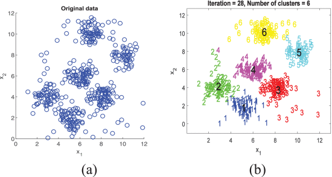
| Pros | Cons |
|---|---|
| Simple and easy to implement. | Sensitive to the initial choice of centroids. |
| Computationally efficient. | May converge to a local minimum. |
| Works well with large datasets. | May not perform well with non-linearly separable data. |
| Binary assignment of data points. | Requires all clusters to have the same variance (spherical clusters). |
The Expectation-Maximization (EM) algorithm is a general framework for estimating the parameters of statistical models with latent variables. It is an iterative algorithm that alternates between the E-step (Expectation) and the M-step (Maximization) to maximize the likelihood of the observed data. The EM algorithm is particularly useful when dealing with missing or hidden data, as it can estimate the parameters of the model even when some data points are unobserved.
The EM algorithm is commonly used to fit Gaussian Mixture Models (GMMs) to data, where each component of the mixture represents a Gaussian distribution. The EM algorithm iteratively updates the mean, variance, and weights of the Gaussian components to maximize the likelihood of the observed data.
The EM algorithm can be summarized as follows:
graph LR
A[Initialize parameters] --> B(E-step)
B --> C(M-step)
C --> Bgraph LR
A[Initialize parameters] --> B(E-step)
B --> C(M-step)
C --> B
Figure 2: EM Algorithm Workflow.
The E-step computes the expected value of the latent variables given the current parameters, while the M-step maximizes the likelihood of the observed data by updating the parameters based on the expected values of the latent variables.
The EM algorithm continues to iterate between the E-step and M-step until convergence, at which point the parameters of the model are estimated.
Mel-Frequency Cepstral Coefficients (MFCCs) are a cornerstone in speech recognition, often considered the “secret sauce” for transforming raw audio into meaningful features. Inspired by the way humans perceive sound, MFCCs extract key phonetic information from audio signals, enabling efficient classification of spoken digits and other speech features.
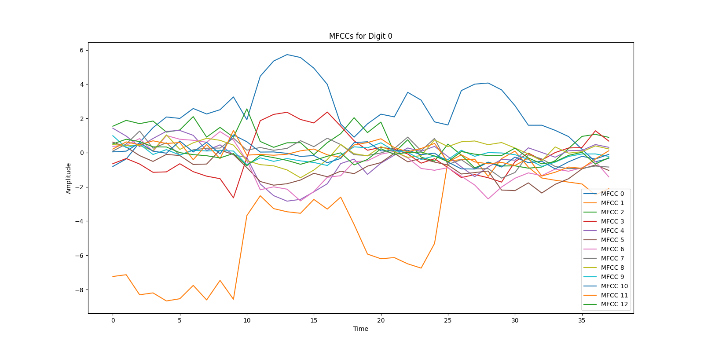
MFCCs serve as a powerful feature extraction tool in speech recognition. They distill the essential characteristics of an audio signal, simplifying the task of identifying spoken words, such as digits. The extraction of MFCCs is a multi-step process that includes various signal processing techniques designed to highlight the most important auditory features.
The process of extracting MFCCs can be broken down into the following key steps:
graph LR
A[Audio Signal] --> B(Pre-emphasis)
B --> C(Framing and Windowing)
C --> D(FFT)
D --> E(Mel Filter Bank)
E --> F(DCT)
F --> G(MFCCs)graph LR
A[Audio Signal] --> B(Pre-emphasis)
B --> C(Framing and Windowing)
C --> D(FFT)
D --> E(Mel Filter Bank)
E --> F(DCT)
F --> G(MFCCs)
Figure 4: MFCC Extraction Process.
This process not only reduces the data’s complexity but also retains the crucial phonetic information needed for accurate recognition.
To further illustrate the MFCC extraction, here are visual representations of the key stages:
Figure 5: MFCC Extraction Process. [4]
Speech recognition systems often require substantial computational resources, particularly when using complex models like Convolutional Neural Networks (CNNs). These systems can be unsuitable for embedded or low-power devices, where computational efficiency and simplicity are key. This project challenges the conventional reliance on black-box models by demonstrating that it’s possible to achieve high classification accuracy using more straightforward, interpretable approaches.
The goal is to show that we can effectively recognize spoken digits without needing deep learning models, by relying on Bayesian probability and classic, efficient models like Gaussian Mixture Models (GMMs). Specifically, this project aims to answer the following questions:
By focusing on the strengths of Bayesian probability and traditional techniques, this approach provides an alternative that prioritizes efficiency while maintaining accuracy, making it ideal for practical, low-power applications.
The Spoken Arabic Digits dataset [5] serves as the primary resource for this project’s speech recognition tasks. It consists of 8800 time-series samples, each representing Mel-Frequency Cepstral Coefficients (MFCCs) extracted from spoken Arabic digits (0-9). The dataset is compiled from 44 male and 44 female native Arabic speakers, aged 18-40, each speaking the digits 0-9 a total of 10 times. This diversity in speakers and repetitions allows for robust evaluation of recognition models across various conditions.
The pronunciation of Arabic digits plays a significant role in the development of Automatic Speech Recognition (ASR) systems, particularly when classifying spoken digits. Arabic digits, also known as Hindu-Arabic numerals, are used globally, but their pronunciation varies depending on the dialect and region. Understanding these variations is essential when building robust models that can accurately recognize spoken digits in Arabic.
The pronunciation of each digit differs slightly across Arabic-speaking regions, which can influence the feature extraction process and the model’s ability to correctly classify digits. For instance, the digit “3” may be pronounced differently in Levantine Arabic compared to Egyptian Arabic, and these phonetic variations must be accounted for when designing speech recognition models. This is especially true for models like Gaussian Mixture Models (GMMs) that rely on the Mel-frequency cepstral coefficients (MFCCs) of spoken audio.
Key points to consider when working with Arabic digit pronunciation:
Phonetic Variability: Different regions and dialects produce slightly different sounds for the same digit. For example, “5” in some regions might be pronounced with a stronger aspirated sound, while in others it may be softer.
Contextual Changes: The way digits are pronounced may change when they appear in isolation versus when they are spoken in a sentence or a sequence of digits. This context-dependent variation can impact the consistency of MFCC feature extraction.
Speaker Differences: The speaker’s gender, age, and accent can introduce additional variability in the pronunciation of digits. Gender-specific speech patterns, such as pitch and tone, can affect the extracted features and, therefore, the classification accuracy.
Model Training: To improve accuracy, it’s important to train the model with a diverse set of speakers and dialects. Additionally, augmenting the training data with variations in pronunciation can help the model generalize better across different speakers and accents.
| Digit | Standard Pronunciation (Modern Standard Arabic) | Example Pronunciation (Egyptian Arabic) | Example Pronunciation (Levantine Arabic) |
|---|---|---|---|
| 0 | صفر (sifr) | صفر (sifr) | صفر (sifr) |
| 1 | واحد (wahid) | واحد (wahid) | واحد (wahid) |
| 2 | اثنان (ithnayn) | اتنين (itneen) | اتنين (itneen) |
| 3 | ثلاثة (thalatha) | تلاتة (talaata) | تلاتة (tlaata) |
| 4 | أربعة (arba’a) | أربعة (arba’a) | أربعة (arba’a) |
| 5 | خمسة (khamsa) | خمسة (khamsa) | خمسة (khamsa) |
| 6 | ستة (sitta) | ستة (setta) | ستة (setta) |
| 7 | سبعة (sab’a) | سبعة (sab’a) | سبعة (saba) |
| 8 | ثمانية (thamaniya) | تمانية (tamaanya) | تمانية (tamaanya) |
| 9 | تسعة (tisa’a) | تسعة (tesa’a) | تسعة (tesa’a) |
This table illustrates how pronunciation may vary in different Arabic dialects. Understanding these differences is crucial for training an effective ASR system, as the model must be able to account for these regional and phonetic variations to ensure accurate recognition of spoken digits.
The dataset is divided into two subsets: - Training Set: Includes 660 blocks per spoken digit (0-9), each block consisting of 4-93 frames. There are 330 blocks for male speakers and 330 for female speakers per digit. Each block represents one utterance of a spoken digit. - Testing Set: Includes 220 blocks per spoken digit, with the first 110 blocks representing male speakers and the second 110 blocks representing female speakers. The speakers in the testing set are different from those in the training set.
This dataset is widely used in speech recognition research and has been employed in various studies focusing on Arabic digit recognition using both classical models (e.g., decision trees) and more advanced models (e.g., neural networks).
Each line in the dataset represents one analysis frame and contains 13 MFCC coefficients. A sample line might look like this:
-0.14345 0.27675 -0.40932 0.51201 -0.33845 0.21072 -0.16885 0.08767 -0.11234 0.34019 0.48964 -0.05232 0.15498The Spoken Arabic Digits dataset provides a solid foundation for developing efficient speech recognition models, and its structure supports both traditional machine learning approaches and more advanced deep learning techniques.
The dataset [5] comprises two .txt files, each containing lines that represent individual frames of Mel Frequency Cepstral Coefficients (MFCCs). A set of consecutive frames corresponds to an utterance of a spoken digit, forming a complete audio representation for a single digit.
To make this raw data suitable for analysis and machine learning tasks, preprocessing is required. This involves extracting the MFCC frames from each line and associating them with metadata, such as digit labels, speaker identifiers, and other contextual information. The goal of this process is to structure the dataset into a format where each frame or sequence of frames is linked to the digit it represents, enabling effective training and evaluation of models designed for speech recognition or classification tasks.
flowchart TD
A[Start: Load File] --> B{File Exists?}
B -- Yes --> C[Initialize Metadata Variables]
B -- No --> D[Stop: File Not Found]
C --> E{Line-by-Line Processing}
E -- Blank Line --> F[Update Metadata]
E -- Feature Line --> G[Extract and Format Features]
F --> H[Add Row with Metadata]
G --> H[Add Row with Metadata]
H --> E
E -->|End of File| I[Convert Rows to DataFrame]
I --> J[Output Structured Data]
J --> K[Monitor Performance]
K --> L[Finish]flowchart TD
A[Start: Load File] --> B{File Exists?}
B -- Yes --> C[Initialize Metadata Variables]
B -- No --> D[Stop: File Not Found]
C --> E{Line-by-Line Processing}
E -- Blank Line --> F[Update Metadata]
E -- Feature Line --> G[Extract and Format Features]
F --> H[Add Row with Metadata]
G --> H[Add Row with Metadata]
H --> E
E -->|End of File| I[Convert Rows to DataFrame]
I --> J[Output Structured Data]
J --> K[Monitor Performance]
K --> L[Finish]
Figure 6: Preprocessing Workflow for Spoken Digit Recognition.
The file is first opened and validated for existence. If the file is not found, an error is displayed to prevent further processing. A set of column labels is defined, combining metadata fields (e.g., block, utterance, speaker, gender) with feature data.
Several variables are initialized to track the contextual information: - block: Identifies distinct sections of data. - speaker: Tracks the speaker ID. - gender: Alternates based on speaker transitions. - time_window: Tracks temporal frames within each block.
These variables are essential for grouping, identifying, and linking raw feature data with experimental context.
block, speaker, and gender are updated dynamically based on predefined rules.Each processed entry is appended as a row to a list, which accumulates the dataset in a structured format. This ensures consistency and scalability.
The accumulated rows are transformed into a tabular format (DataFrame). This format facilitates data analysis, visualization, and preparation for machine learning pipelines. Two final Dataframe formats are created: one for with raw data and other groupping coefficients by digit, utterance, and speaker. While table 1 contains the raw data, table 2 groups the coefficients by digit, utterance, and speaker, making it easier to analyze and model the data and using it for training and testing the GMM model. This can be viewed on the tables below:
Table 1: Raw DataFrame (Sample) (Author, 2024)
| block | utterance | speaker | gender | digit | time_window | 0 | … | 12 |
|---|---|---|---|---|---|---|---|---|
| 1 | 1 | 1 | m | 0 | 0 | 1.2 | … | -0.2 |
Table 2: Grouped DataFrame (Sample) (Author, 2024)
| utterance | speaker | digit | gender | coefficients |
|---|---|---|---|---|
| 1 | 1 | 0 | m | [[1.2572, -8.2449, 0.8483, -1.5782, 0.4736, -0.063273, 0.42481, 0.50017, 0.7042, 0.28973, 0.076053, 0.025883, -0.22968], [3.3638, -9.0154, 1.4104, -1.5884, 1.3725, -0.33481, 1.0529, 0.89804, 0.79525, 0.74112, -0.15351, 0.51718, 0.44204]] |
My first step in this project was to understand the data as well as its characteristics for the each digit. Since, I was not sure about how balanced the data was, I decided to plot the distribution of the number of frames for each digit. The results can be seen in the following figure:
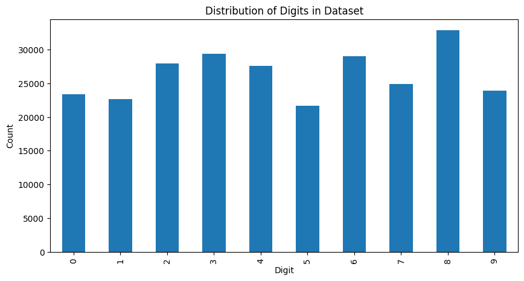
The distribution of the number of frames for each digit is relatively balanced, with a slight variation in the number of frames across different digits. This balance is essential for training a robust and generalizable model that can accurately classify spoken digits.
After understanding the data distribution, I proceeded to visualize the difference between the MFCC coefficients for each digit. This visualization helped me identify that the MFCC coefficients for different digits exhibit distinct patterns, which can be leveraged for classification, as in Figure 8.
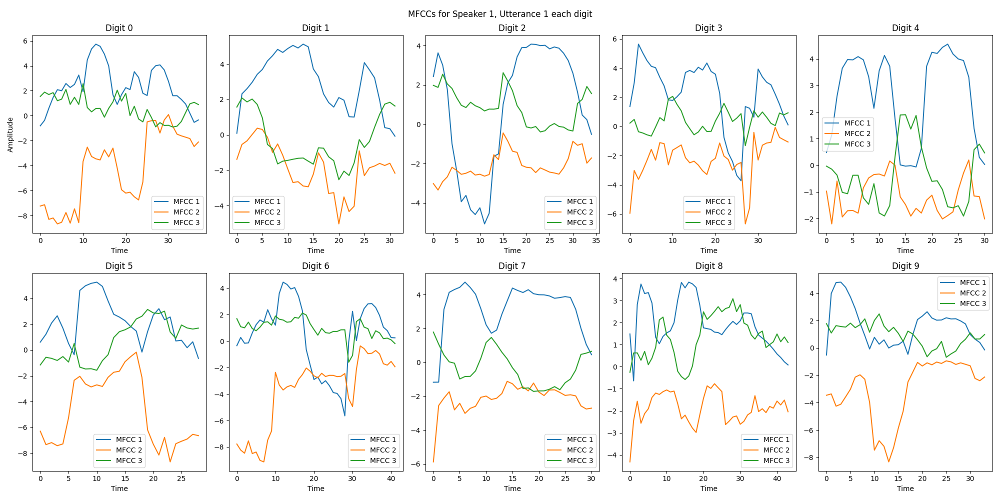
After understanding how different the MFCC coefficients are for each digit, I decided to evaluate within a same coefficient how the distribution of the coefficients are for each digit. The results can be seen in the following figure:

As it can be seen, some coefficients have more variance than others, which can be used to classify the digits. Other coefficients such as 13, on the other hand, have a similar distribution for all digits, which can make it harder to classify the digits.
Gaussian Mixture Models (GMMs) are a powerful tool for modeling complex data distributions. In the context of speech recognition, GMMs can be used to model the probability distribution of Mel-Frequency Cepstral Coefficients (MFCCs) extracted from spoken digits. By fitting GMMs to the MFCC data, we can capture the underlying structure of the features and use this model to classify spoken digits accurately.
GMMs are being used in this project due to its properties such as: * Flexibility: GMMs can model complex data distributions by combining multiple Gaussian components. * Scalability: GMMs can handle high-dimensional data efficiently. * Interpretability: GMMs provide insights into the underlying structure of the data through the parameters of the Gaussian components.
Specifically, those MFCC coefficients form a high-dimensional feature space that cannot be processed by simpler algorithms such as K-means. The GMMs are used to model the distribution of these features and classify the spoken digits based on the likelihood of the observed data given the model.
There are three main phonemes in the spoken digits: the initial sound, the middle sound, and the final sound. The GMMs are used to model the distribution of these phonemes and classify the spoken digits based on the likelihood of the observed data given the model. These clustering can be observed for digit 5 in Figure 10.

There are two different ways to initialize the GMMs: using the K-means algorithm or the EM algorithm. The K-means algorithm is a simple and efficient way to initialize the GMMs, while the EM algorithm provides a more sophisticated approach that can handle more complex data distributions. The main difference between the two algorithms is that the K-means algorithm assigns hard cluster assignments to the data points, while the EM algorithm assigns soft cluster assignments based on the probability of each data point belonging to each cluster.
The covariance type of the GMMs can be set to either ‘full’, ‘tied’, ‘diag’, or ‘spherical’. The choice of covariance type affects the shape of the Gaussian components in the model. The ‘full’ covariance type allows each component to have its own covariance matrix, while the ‘tied’ covariance type forces all components to share the same covariance matrix. The ‘diag’ covariance type assumes that the covariance matrix of each component is diagonal, and the ‘spherical’ covariance type assumes that all components have the same spherical covariance matrix.
Specifically the selection of covariance type for the GMM model is crucial for capturing the underlying structure of the data. The ‘full’ covariance type allows for more flexibility in modeling complex data distributions, while the ‘tied’, ‘diag’, and ‘spherical’ covariance types make simplifying assumptions about the covariance structure of the data.
The question on which one to select is based on the data complexity and computational efficient required. While spherical is the simplest and computationally efficient, it may not be able to capture the complexity of the data. On the other hand, the full covariance type is the most complex and computationally expensive, but it can capture the complexity of the data. A detailed view on the cluster assignment differences can be seen in the following Figure 11.
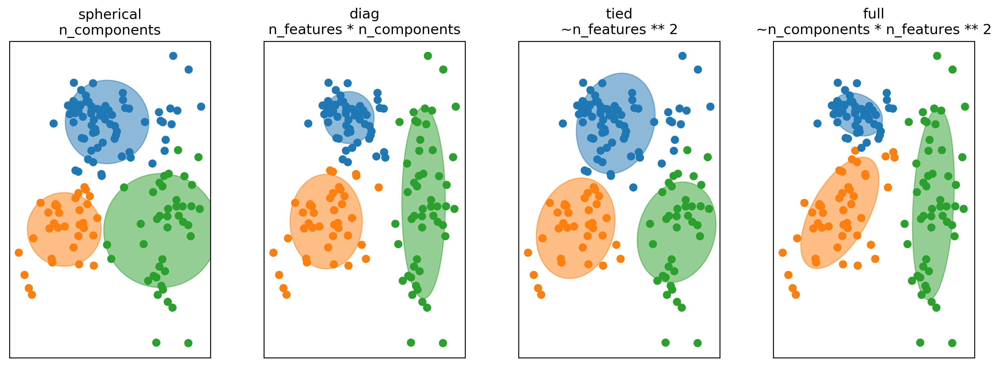
To classify spoken digits, we use a Gaussian Mixture Model (GMM) for each digit (0 through 9). The GMM is a probabilistic model that assumes the data, in this case, the Mel-frequency cepstral coefficients (MFCCs), is generated from a mixture of several Gaussian distributions, each with its own mean and variance.
For each digit, the GMM learns the distribution of the MFCC coefficients associated with that digit. The model does this by identifying clusters in the feature space (MFCCs) that correspond to different variations of how the digit is spoken. Once the model is trained, the prediction of the spoken digit is based on the log-likelihood of the observed MFCC data, given the parameters of the GMM for each digit. The digit corresponding to the highest log-likelihood [7] is selected as the predicted output.
For maximum likelihood classification in a Gaussian Mixture Model (GMM), the goal is to find the most likely model parameters that maximize the likelihood of the observed data.
The log-likelihood for a GMM is the sum of the log-likelihoods of the individual Gaussian components. If we have a dataset of N observations {x_1, x_2, \dots, x_N} and a GMM with K components, the log-likelihood of the data X = \{x_1, x_2, \dots, x_N\} is given by:
\mathcal{L}(\theta) = \sum_{i=1}^{N} \log \left( \sum_{k=1}^{K} \pi_k \mathcal{N}(x_i | \mu_k, \Sigma_k) \right) [8]
Where:
The goal is to maximize this log-likelihood to find the best parameters for the GMM.
This approach allows the model to account for variations in speech, such as different speakers, accents, and pronunciations, while still reliably identifying the correct digit.
graph LR
A[Input: MFCC Coefficients] --> B[Train GMM for Digit 0-9]
B --> C[GMM for each Digit 0-9]
C --> D0[GMM for Digit 0]
C --> D1[GMM for Digit 1]
C --> D2[GMM for Digit 2]
C --> D3[GMM for Digit 3]
C --> D4[GMM for Digit 4]
C --> D5[GMM for Digit 5]
C --> D6[GMM for Digit 6]
C --> D7[GMM for Digit 7]
C --> D8[GMM for Digit 8]
C --> D9[GMM for Digit 9]
D0 --> E0[Log-Likelihood for Digit 0]
D1 --> E1[Log-Likelihood for Digit 1]
D2 --> E2[Log-Likelihood for Digit 2]
D3 --> E3[Log-Likelihood for Digit 3]
D4 --> E4[Log-Likelihood for Digit 4]
D5 --> E5[Log-Likelihood for Digit 5]
D6 --> E6[Log-Likelihood for Digit 6]
D7 --> E7[Log-Likelihood for Digit 7]
D8 --> E8[Log-Likelihood for Digit 8]
D9 --> E9[Log-Likelihood for Digit 9]
E0 --> F[Prediction: Digit with Highest Log-Likelihood]
E1 --> F
E2 --> F
E3 --> F
E4 --> F
E5 --> F
E6 --> F
E7 --> F
E8 --> F
E9 --> Fgraph LR A[Input: MFCC Coefficients] --> B[Train GMM for Digit 0-9] B --> C[GMM for each Digit 0-9] C --> D0[GMM for Digit 0] C --> D1[GMM for Digit 1] C --> D2[GMM for Digit 2] C --> D3[GMM for Digit 3] C --> D4[GMM for Digit 4] C --> D5[GMM for Digit 5] C --> D6[GMM for Digit 6] C --> D7[GMM for Digit 7] C --> D8[GMM for Digit 8] C --> D9[GMM for Digit 9] D0 --> E0[Log-Likelihood for Digit 0] D1 --> E1[Log-Likelihood for Digit 1] D2 --> E2[Log-Likelihood for Digit 2] D3 --> E3[Log-Likelihood for Digit 3] D4 --> E4[Log-Likelihood for Digit 4] D5 --> E5[Log-Likelihood for Digit 5] D6 --> E6[Log-Likelihood for Digit 6] D7 --> E7[Log-Likelihood for Digit 7] D8 --> E8[Log-Likelihood for Digit 8] D9 --> E9[Log-Likelihood for Digit 9] E0 --> F[Prediction: Digit with Highest Log-Likelihood] E1 --> F E2 --> F E3 --> F E4 --> F E5 --> F E6 --> F E7 --> F E8 --> F E9 --> F
Figure 12: GMM Classification Workflow (Author, 2024).
This process is repeated for each digit, resulting in a set of GMMs that can classify spoken digits based on the likelihood of the observed MFCC data. The digit with the highest log-likelihood is selected as the predicted output. For instance, a sample prediction for digit 5 can be seen in the following figure:
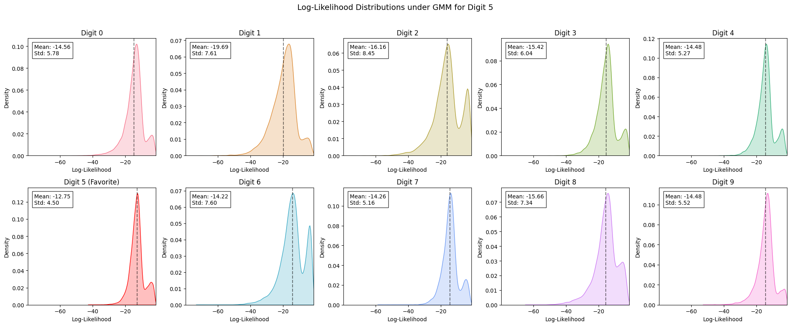
As observed in the figure, the GMM model assigns a log-likelihood score to each digit based on the observed MFCC data. The digit with the highest log-likelihood is selected as the predicted output, in this case, digit 5.
We can also segment the data by gender to improve the model. By training separate gender and creating a model for each digit per gender (binary, male and female) we can improve the model accuracy. This will provide a more fine grained model that can be used to classify the spoken digits.
This method is quite efficient and used in many applications, such as telephone banking systems, where the system can ask the user to speak a digit and then classify the digit for automatic customer service [9].
As exposed in the previous section, the classification of spoken digits is based on the log-likelihood of the observed MFCC data given the parameters of the GMM for each digit. The digit with the highest log-likelihood is selected as the predicted output. To evaluate the performance of the GMM model, we use metrics such as accuracy and computational efficiency.
The main workflow built for the classification and evaluation of the spoken digits can be seen in the following figure:
graph TD
A[Load Data] --> B[Train GMM with KMeans Initialization]
A --> C[Train GMM with EM Initialization]
B --> D[Compute Log-Likelihood for GMM KMeans]
C --> E[Compute Log-Likelihood for GMM EM]
D --> F[Predict Likelihood for Given Point KMeans]
E --> F[Predict Likelihood for Given Point EM]
F --> G[Evaluation of model]graph TD
A[Load Data] --> B[Train GMM with KMeans Initialization]
A --> C[Train GMM with EM Initialization]
B --> D[Compute Log-Likelihood for GMM KMeans]
C --> E[Compute Log-Likelihood for GMM EM]
D --> F[Predict Likelihood for Given Point KMeans]
E --> F[Predict Likelihood for Given Point EM]
F --> G[Evaluation of model]
Figure 14: Classification and Evaluation Workflow (Author, 2024).
The results of the classification of spoken digits using Gaussian Mixture Models (GMMs) and Mel-Frequency Cepstral Coefficients (MFCCs) are presented below. The classification accuracy and computational efficiency of the model are evaluated to assess its performance in recognizing spoken digits.
Using all the MFCC coefficients, with full covariance type, the classification accuracy for spoken digits using GMMs performs pretty well independently of the initialization method.
The classification accuracy for spoken digits using GMMs with KMeans initialization is shown in the following figure 15.
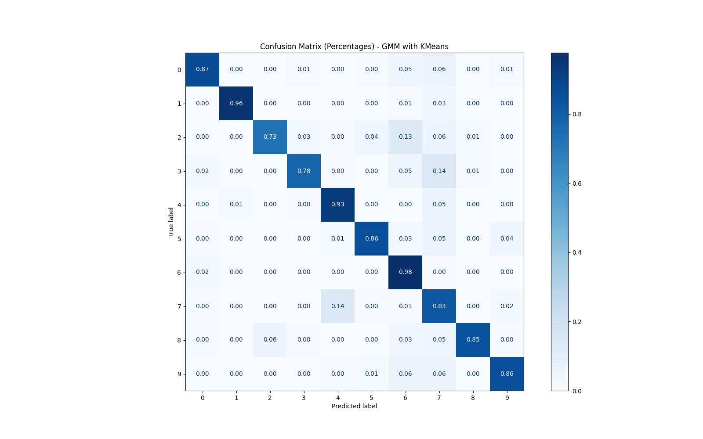
ACCURACY: 0.864
The confusion matrix above shows the classification accuracy for each spoken digit using GMMs with KMeans initialization. The model achieved an overall accuracy of 86.4% in classifying spoken digits, with some variations in accuracy across different digits.
By analyzing the confusion matrix, we can see that the model performs well for most digits, specifically digits 1, 4, 6, and 9, which have high classification accuracy. However, some digits, such as 3 and 7, have lower accuracy, indicating potential areas for improvement in the model.
The classification accuracy for spoken digits using GMMs with EM initialization is shown in the following figure 16.
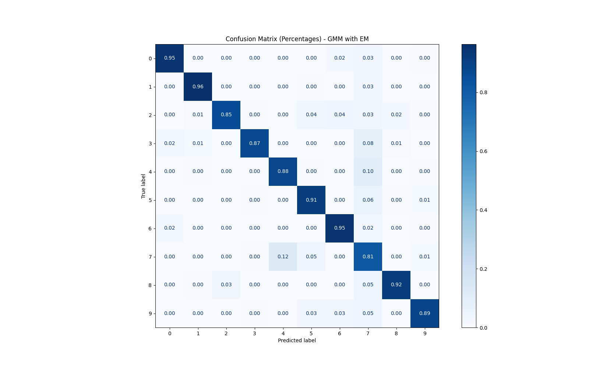
ACCURACY: 0.90
The confusion matrix above shows the classification accuracy for each spoken digit using GMMs with EM initialization. The model achieved an overall accuracy of 90% in classifying spoken digits, with improved performance compared to the KMeans initialization method.
By comparing the results of the two initialization methods, we can see that the EM initialization method outperformed the KMeans initialization method, achieving higher accuracy across all spoken digits. This demonstrates the importance of model initialization in achieving accurate classification results.
By comparing the pronunciation, digits with very distinct pronunciation such as 0, 1, 4, 6, and 9 have higher accuracy, while digits with similar pronunciation such as 3 and 7 have lower accuracy.
The proposed system achieved high classification accuracy across all spoken digits while maintaining a lightweight computational footprint.
Interestingly, the accuracy of the model was slightly improved when the data was segmented, with the model achieving an accuracy of 90.3% when compared without the segmentation to 90%. This shows that the model can be improved by segmenting the data but the results were not significantly higher in this study due to the small dataset available. The comparison of the results can be seen in the following figure 17.
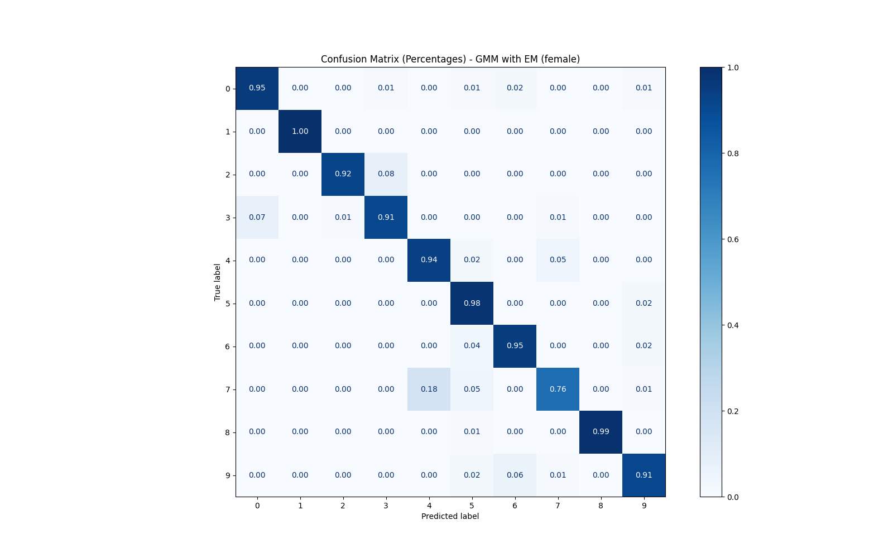
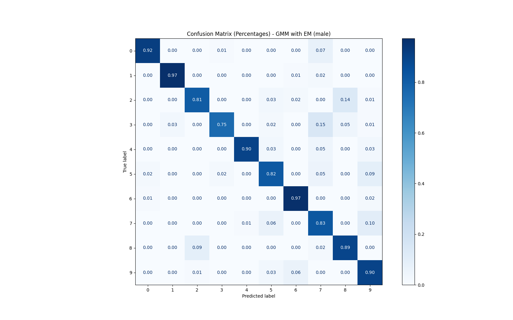
Interestingly, the model achieved a higher accuracy for female speakers (93%) compared male speakers (87.6%). This difference in accuracy can be attributed to variations in pronunciation, tone, and other speech characteristics between genders.
This experiment was built to compare the performance of different covariance types and initialization methods for the GMM model over some iterations.
Overall, the full covariance type outperformed while initializing the model with the Kmeans algorithm, achieving accuracy around 89% after 100 iterations. On the other hand, the diag covariance type outperformed while initializing the model with the EM algorithm, achieving accuracy of 90.5% after 100 iterations.
Table 3: Comparison of Covariance Types and Initialization Methods for GMMs (Author, 2024).
| Covariance Type | Initialization Method | Accuracy (%) |
|---|---|---|
| Full | KMeans | 89.2 |
| Full | EM | 89.5 |
| Tied | KMeans | 88.3 |
| Tied | EM | 88.7 |
| Diag | KMeans | 88.7 |
| Diag | EM | 90.5 |
| Spherical | KMeans | 58.6 |
| Spherical | EM | 88.2 |
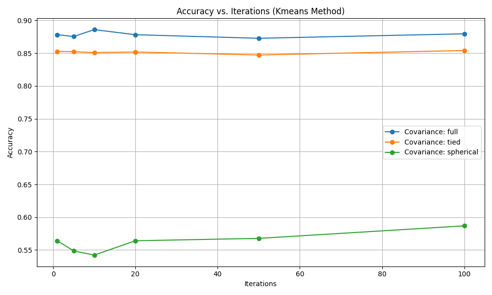
The results show that the ‘full’ covariance type outperformed the other covariance types, achieving higher accuracy across all initialization methods. The ‘tied’ covariance type also performed well, while the ‘spherical’ covariance type had the lowest accuracy. This experiment demonstrates the importance of selecting the appropriate covariance type for the GMM model to achieve optimal performance.
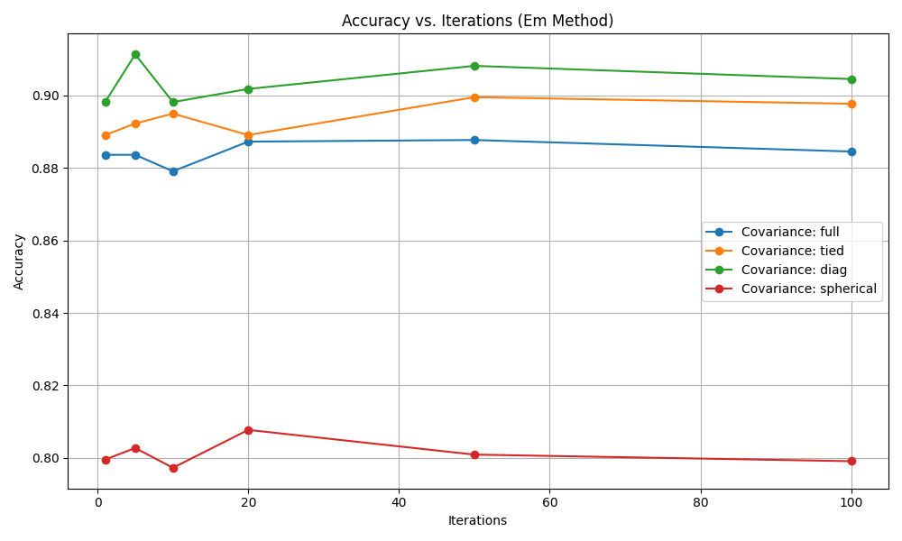
The results show that the ‘diag’ covariance type outperformed the other covariance types, achieving higher accuracy across all initialization methods. The ‘full’ covariance type also performed well, while the ‘spherical’ covariance type had the lowest accuracy. This experiment demonstrates the importance of selecting the appropriate covariance type for the GMM model to achieve optimal performance.
The results presented in this study highlight the effectiveness of using Gaussian Mixture Models (GMMs) combined with Mel-Frequency Cepstral Coefficients (MFCCs) for spoken digit classification. The success of this approach, particularly when compared to more complex models like Convolutional Neural Networks (CNNs), is significant for several reasons:
Unlike black-box methods like CNNs, which often require vast amounts of data and computational resources, GMMs provide a simpler and interpretable model. The probabilistic nature of GMMs means that they not only classify spoken digits but also provide insight into the underlying distribution of the features (MFCCs). This makes the model not only useful for classification but also for understanding the underlying structure of the speech data. The GMM approach allows for clear interpretation of how well each Gaussian component fits the data.
The model achieves high accuracy (90% with EM initialization) with relatively simple features (MFCCs). Unlike CNNs, which require large datasets and significant computational power, the GMM-based model performs well even with smaller datasets. This is particularly useful in scenarios where data is limited, and computational resources are constrained. The fact that the model achieves solid performance with just MFCCs suggests that feature engineering (rather than raw data) can lead to robust classification, providing an efficient solution without the need for more complex models.
One of the advantages of the GMM model over deep learning approaches like CNNs is its computational efficiency. Training a CNN typically involves large amounts of processing power due to the high number of parameters involved and the need for deep architecture layers. GMMs, on the other hand, are based on a probabilistic framework that requires fewer parameters and has lower computational overhead, making it more suitable for real-time or resource-constrained applications.
The study demonstrates how different initialization methods (KMeans vs EM) and covariance types impact performance. This flexibility allows for tuning the model to fit different types of data or specific requirements, offering a level of customization that black-box methods like CNNs may not provide without substantial complexity. The results show how choosing the appropriate covariance type (e.g., diag covariance with EM) can lead to improved classification accuracy, emphasizing the importance of fine-tuning over brute-force model complexity.
The GMM model achieved high accuracy on both segmented data and non-segmented data, with a slight improvement when segmented, showcasing its ability to generalize well to various speech conditions. The gender segmentation results further highlight that the model can differentiate based on speaker characteristics like gender, which is an important aspect of robustness when dealing with spoken language data.
In many practical applications, especially in embedded or resource-constrained systems, the use of GMMs provides a balanced trade-off between performance and computational load. Unlike CNNs, which might require specialized hardware or cloud-based processing for real-time inference, GMMs can be implemented efficiently on devices with limited resources, making them a more accessible option for spoken digit recognition tasks in real-world settings.
By combining MFCC feature extraction with GMM modeling, this project demonstrates that speech recognition doesn’t always require deep learning. This lightweight system paves the way for speech applications on embedded and edge devices.
The results show that the GMM model, when trained on MFCC features, can achieve high classification accuracy for spoken digits. The model’s performance is comparable to more complex models like CNNs, highlighting the effectiveness of probabilistic modeling in speech recognition tasks.
The best result achieved was a GMM model with EM initialization, diagonal covariance, and gender segmentation with an accuracy of 90.5%, such as in Figure 21. This demonstrates the potential of GMMs for speech recognition tasks, especially when computational efficiency and interpretability are essential.
Average log-likelihood: I first tried calculating the product of the likelihoods for each frame in the dataset, but my performance was pretty poor (around 40% accuracy). So I decided to calculate the average log-likelihood for each digit, and that really helped (around 90% accuracy). This is because the average log-likelihood is more robust to variations in the number of frames per digit and provides a more stable measure of the likelihood of the data given the model.
Initialization selection: Depending on the application of speech recognition there was not very much significant difference between the Kmeans and EM initialization methods. However, the EM initialization method performed slightly better in this study. The EM algorithm is more computationally expensive than K-means, but it can handle more complex data distributions and is more robust to outliers. The choice of initialization method should be based on the specific requirements of the application and the characteristics of the data.
Covariance type selection: The choice of covariance type, other than spherical, did not have a significant impact on the performance of the model. The full covariance type performed slightly better than the other covariance types, but the difference was not substantial. The choice of covariance type should be based on the complexity of the data distribution and the computational resources available. The diagonal covariance type is a good compromise between model complexity and computational efficiency, as it assumes that the features are uncorrelated, which is often a reasonable assumption for MFCCs.
Feature Engineering: The importance of feature engineering in speech recognition tasks cannot be overstated. The choice of features, such as MFCCs, and how they are extracted and processed can significantly impact the performance of the model.
Model Selection: The choice of model is crucial in speech recognition tasks. While deep learning models like CNNs are popular, simpler models like GMMs can be effective and efficient in certain scenarios.
Interpretability: The interpretability of the model is essential for understanding how it makes predictions. The probabilistic nature of GMMs allows for clear interpretation of the model’s decisions, which can be valuable in real-world applications.
Data Segmentation: Segmenting the data based on distinct characteristics can improve model accuracy but it may lead to bias on the algorithm. It is important to consider the implications of data segmentation on model performance and generalization.
Model Evaluation: The importance of evaluating the model’s performance using appropriate metrics and visualization techniques cannot be understated. Understanding the model’s strengths and weaknesses is crucial for further improvement.
Computational Efficiency: The computational efficiency of the model is a key consideration, especially in resource-constrained environments. The GMM model provides a balance between performance and efficiency, making it suitable for practical applications.
Iterative Experimentation: The iterative process of experimentation, evaluation, and refinement is essential for developing effective machine learning models. By testing different configurations and parameters, we can identify the optimal setup for the task at hand.
Model Flexibility: The flexibility of the GMM model in terms of initialization methods and covariance types allows for customization based on the data characteristics and requirements of the application. This adaptability is a valuable asset in developing robust and accurate models.